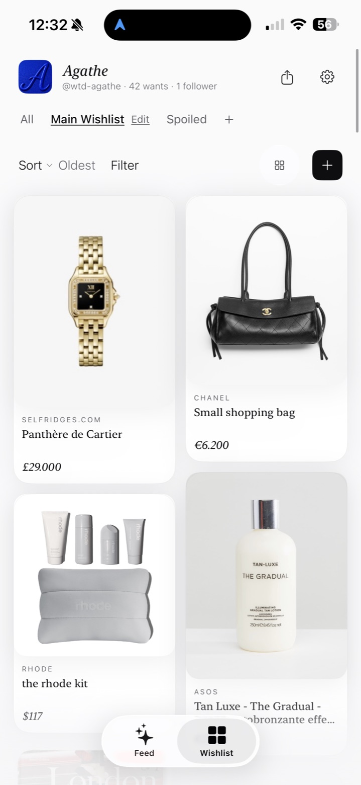
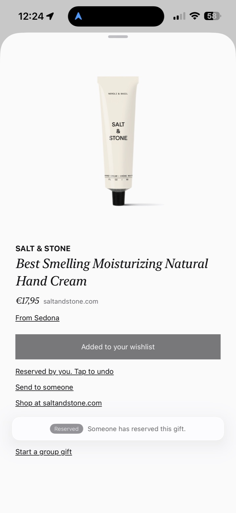
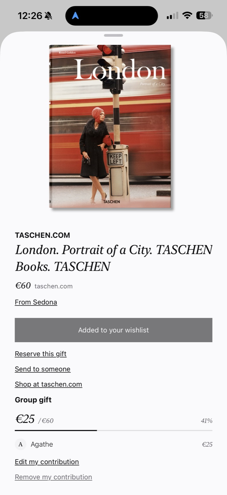

A wishlist, kept beautifully.
Paste a link. Wantd keeps the piece, the photo and the price. Your circle sees what you truly want, and nobody spoils the surprise.
What it is
One place for everything you want. Zara, Sephora, a small ceramic studio you found on Instagram. If it is sold online, it belongs on your list.
How it works
-
Paste a link.
Photo, price and shop are read from the page. Fix a word if you must.
-
Your circle reserves. You never know.
A friend marks a piece as taken. You only find out on the day.
-
Prices watched for you.
When a piece goes on sale, you hear about it.
-
Lists you keep together.
A birth, a wedding, a family Christmas: one list, several hands.
The app, as it is



Wantd is invitation-only.
Ask for a place. We write to you as soon as one opens up.